Learn Android Apprentice in 10 days
开始学习使用Android Studio
在iOS的学习告一段落了之后，现在开始学习Android应用的开发。
他总共包括六个部分，前四个部分每一部分教你编写一个app，难度从低到高。后面两部分会告诉你怎么向下兼容和发布。跟之前的iOS教程很像。
TimeFighter
Checklist
MapBasedApp
PodcaseManager
Conclusion
第一个App: TimeFighter
这个app会从怎么set up Android Studio开始，我们直接跳过，到最开始写代码的部分
Constraint Layouts
和iOS App很像，手机app必须考虑到对象在手机屏幕上的位置问题，Android有提供很多种layoutdexuanze，其中Constraint是最常用的一种，他可以规定目标到屏幕的相对位置
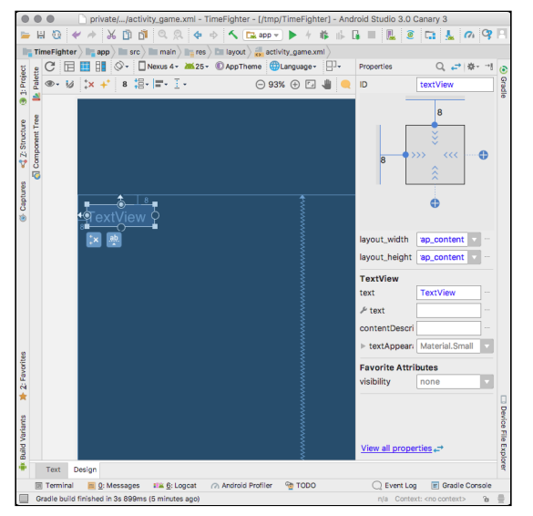 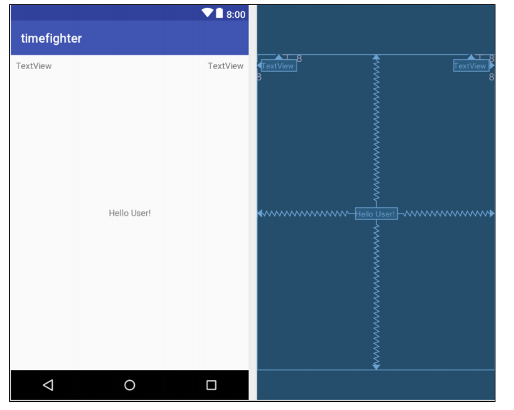Activities
在确定了诸如Textview，Button等对象的位置之后，我们需要在代码层面对其进行操作，我们可以在Aciticity中创建这些变量对象，然后通过在Layout中设置的ID找到他们，Activity其实就是iOS中的ViewController。
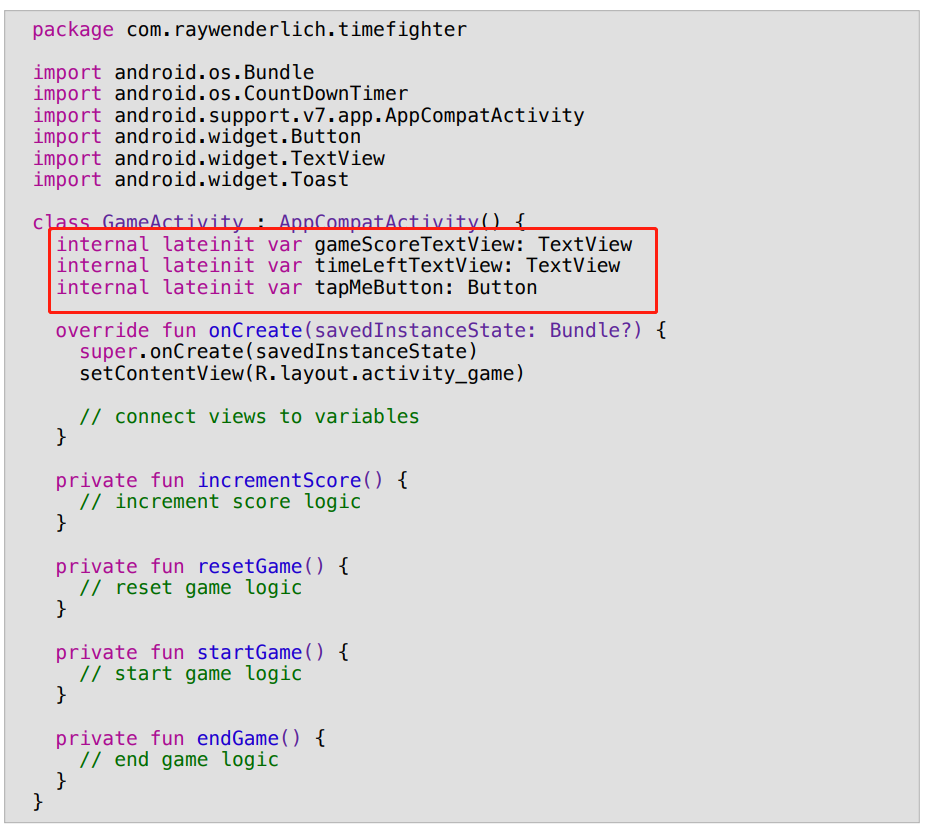 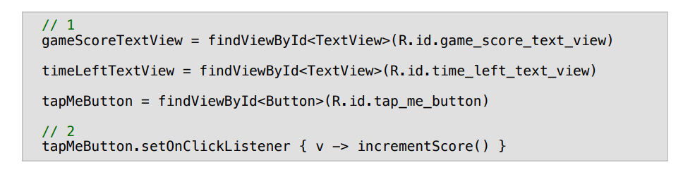Strings
我们会将一个app中用到的所有文字集中在一个文件中，这个文件叫做Strings.xml，这样以后本地化加其他语言或者更改一个单词，这个单词虽然在app中可能出现了很多次，但是我们只需要在Strings里面改一次就可以了
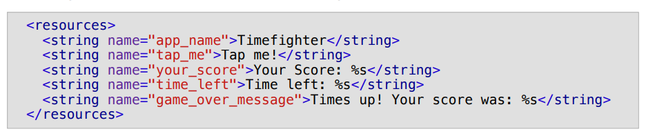Oriendtation changes
在手机屏幕方向改变时，系统会做三件事，1.save properties, 2. destroys current activity, 3. recreates the activity for the new orientation by calling onCreate and resets any properties specified by the developer
所以在改变方向时，我们需要及时保存需要用到的变量，在接下来现实的Activity中显示，保证过程不会丢失。
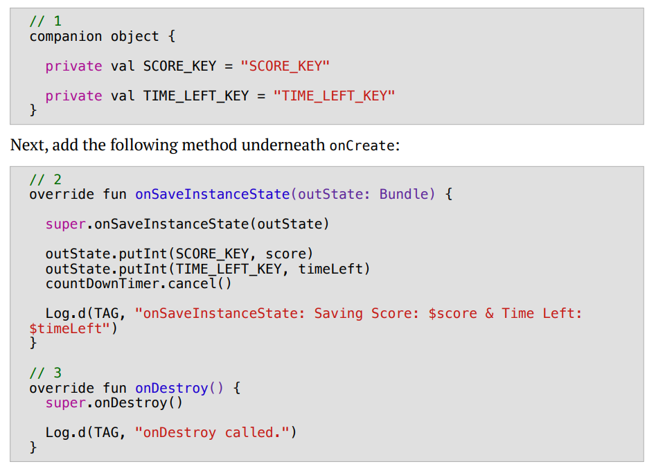 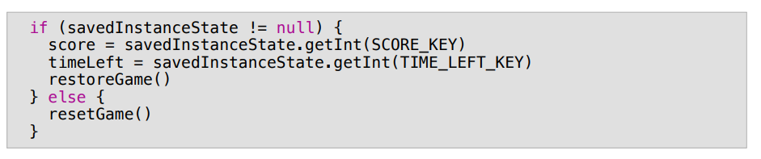App colors and styles
Android project中有许多文件夹，其中res包含着app需要用到的所有资源resources，常用的Strings，Animations，Menus，Colors and Styles都在这里, 通过直接更改Colors里面颜色的hex值来改变app中元素的颜色，更方便的管理同一种类型的东西
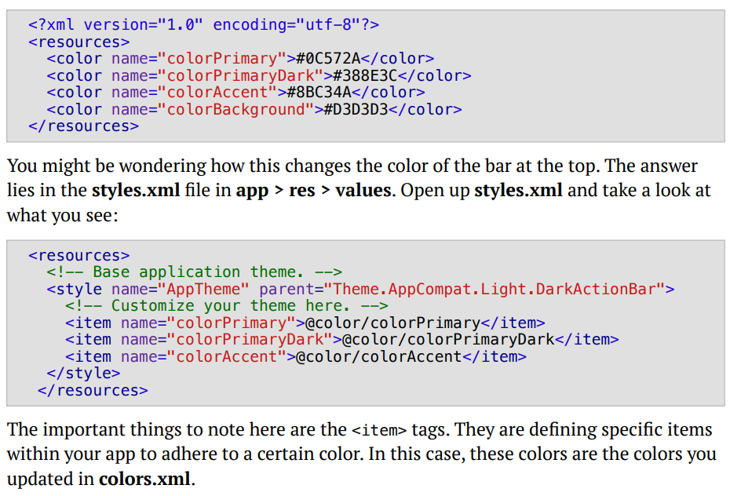Animations
Animations也在res文件夹里，她负责调用以及调配动画，图片里的动画效果是使用内置的bounce_interpolator，在2秒钟内把目标元素增大2倍，以50%处为中心，并缩小至原来的大小。
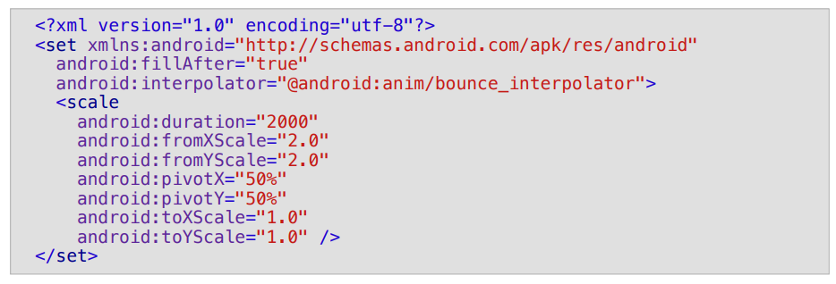Menu
Menu同样他也在res文件夹中，他管理所有跟系统菜单相关的元素，比如我们想在屏幕上方的菜单栏中加入一个button，就需要在这里定义
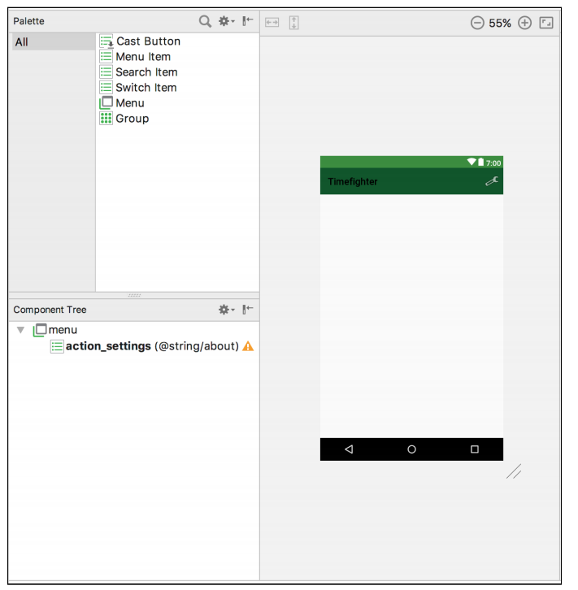我们加了一个Menu，当点击时会冒出一个AlertDialog
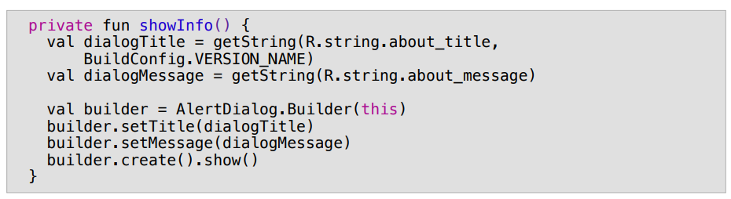 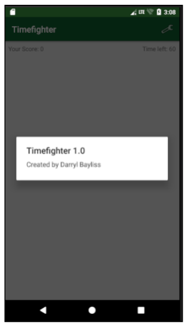这就是第一个app所讲的全部内容了，基本就是把project中需要用到的功能讲了一遍，没有用到任何复杂的语法，更多的讲的是Android Studio这个IDE的使用。接下来进行第二个app
第二个App: Checklist
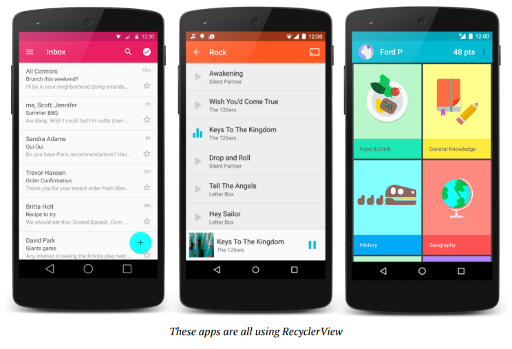RecyclerView
1. The RecyclerView asks the Adapter for an item, or a ViewHolder at a given position. 2. The Adapter reaches into a pool of ViewHolders that have been created. 3. Either a a new ViewHolder is returned, or a new one is created. 4. The Adapter then binds this ViewHolder to a data item at the given position. 5. The ViewHolder is returned back to the RecyclerView for display
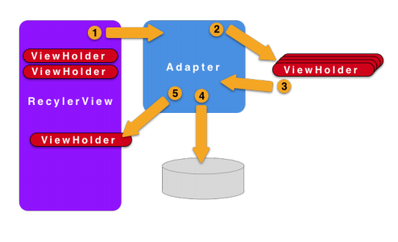In general, Adapters give your RecyclerView the data it wants to show. They have a clever way to calculate how many rows of data you want to show, which you’ll cover shortly. ViewHolders are the visual containers for your item. Think of them as cells in the table. This is where you tell your RecyclerView what each item should look like. These are basically little tiny layout items used to display the data at any given position in the list of data. As you scroll through a RecyclerView, instead of creating new ViewHolders, RecyclerView will recycle ViewHolders that have moved offscreen and populate them with new data, ready to be shown at the bottom of the list. This process repeats endlessly as you scroll through your RecyclerView. This recycling of ViewHolder to display list items helps to avoid janking in your app.
RecycleView 的本质是循环使用table中的cell，当一个cell网上滑出屏幕时，我们可以让他重新出现在底部，但是显示不同的数据，这就要求我们在写代码时要把table，cell和数据分开来，每个部分各司其职。
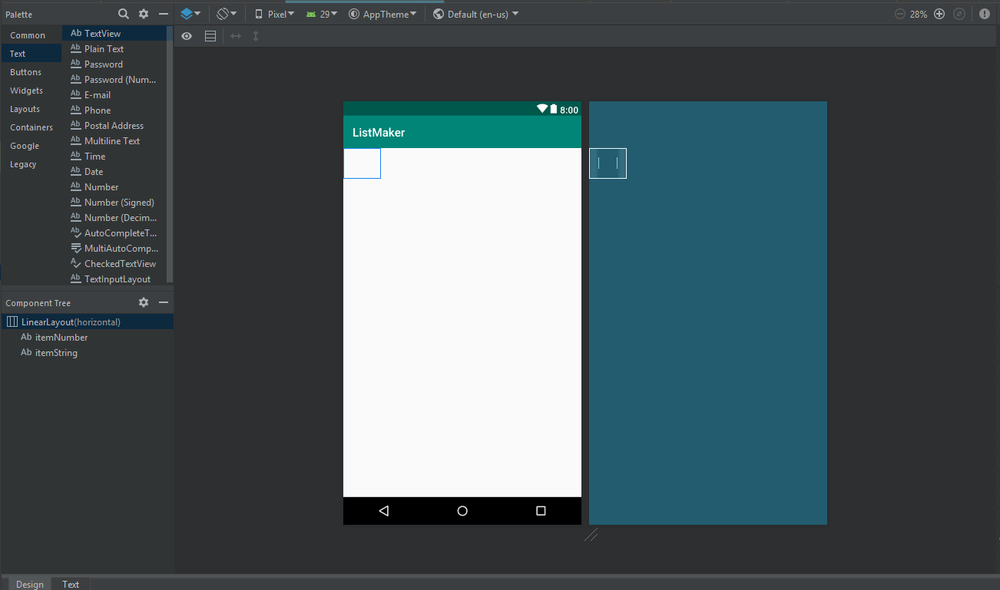这个是cell部分，它由两个textview组成。对应上图中的viewHolder
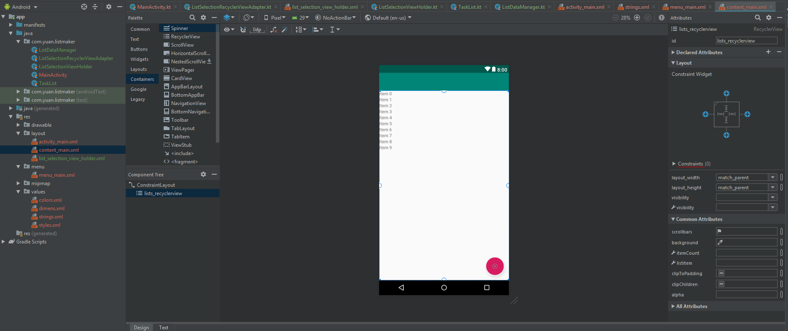这个是table部分，它包含多个cell，并可以循环利用cell。对应上图中的adapter。我们需要在adapter中implement recycleview必须的成分例如包含多少个viewholder，每个viewholder的数据应该从哪里取。。
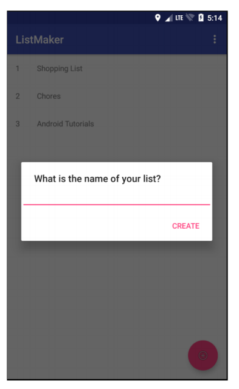除了recycleview本身，我们应该把data source设置成动态的，也就是说我们可以输入自己的数据，并加进recycleview中。
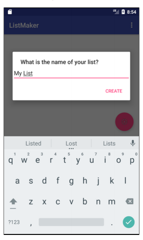SharedPreferences
SharedPreferences lets you save small collections of key-value pairs that you can retrieve later. If you need a way to quickly save small bits of data in your app, SharedPreferences is one of the first solutions you should consider
这就需要用到sharedpreference，它类似于一个dictionary，里面由key-value pairs组成。可以储存size较小的数据。类似于表格信息
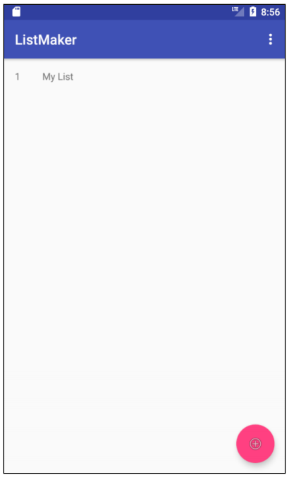